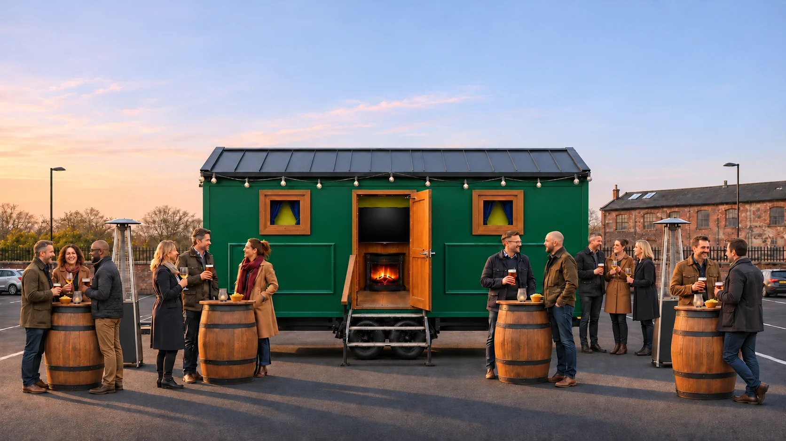
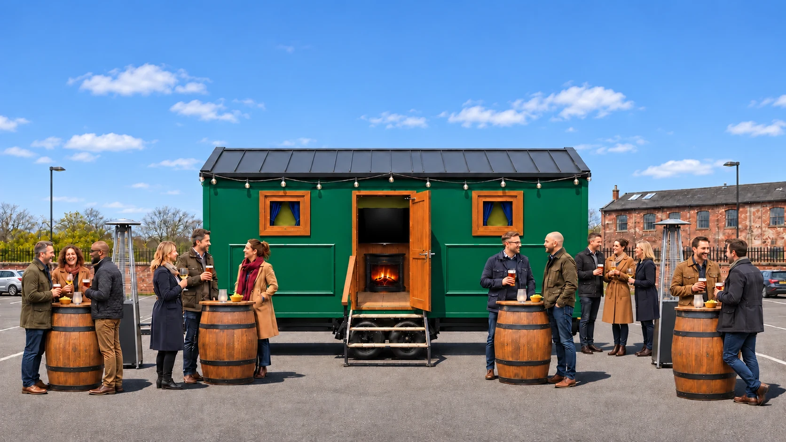
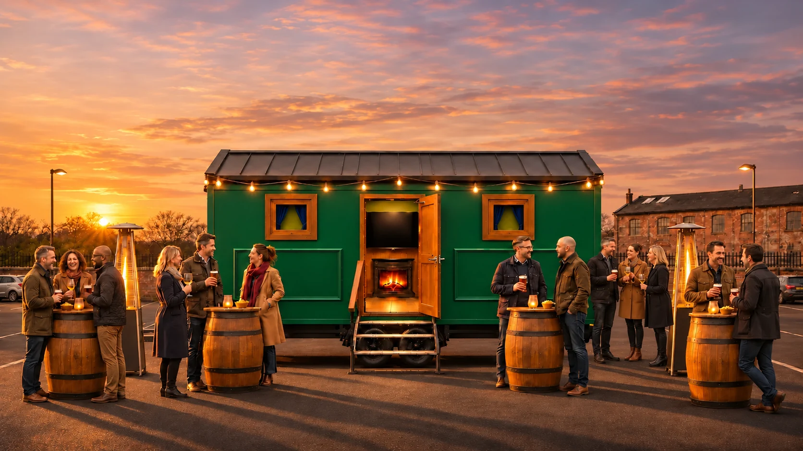
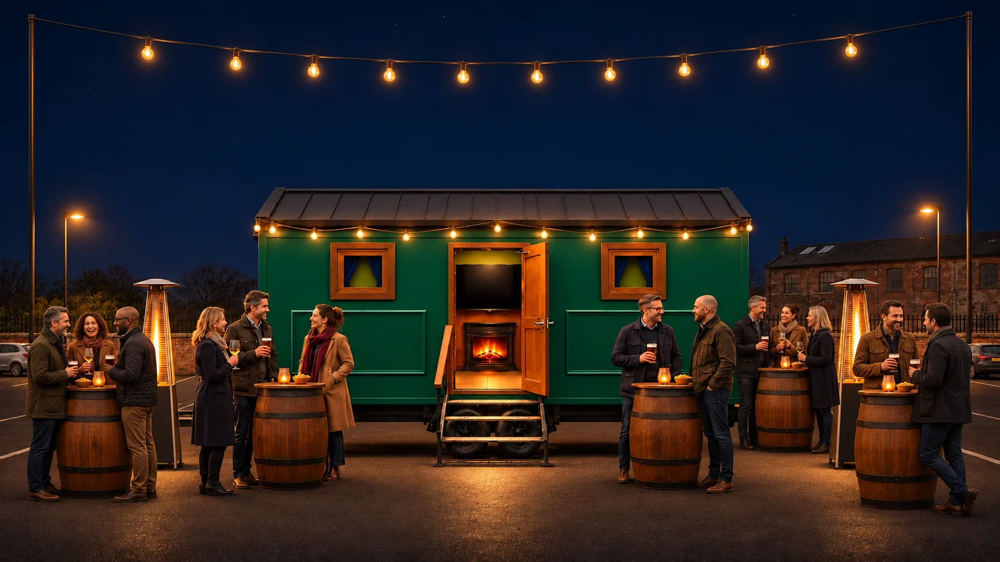

мобильный паб
Привозим атмосферу настоящего ирландского паба на вашу площадку.
Фургон, оборудование, персонал и напитки — готовое event-решение под ключ для частных праздников, корпоративов и фестивалей.
Видео о пабе